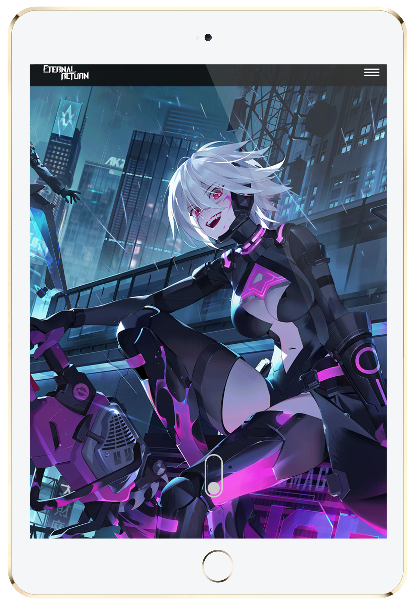
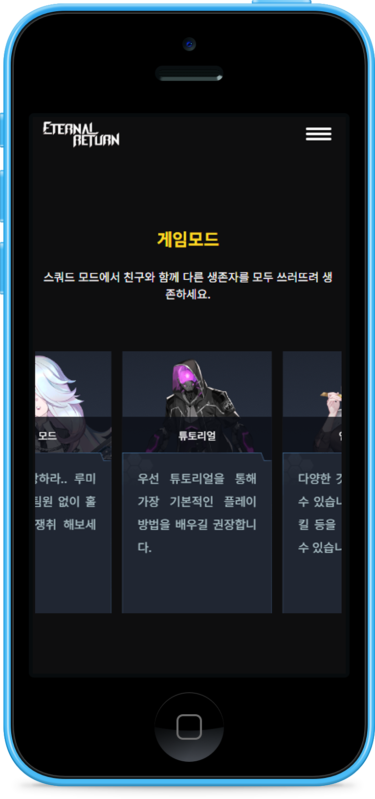
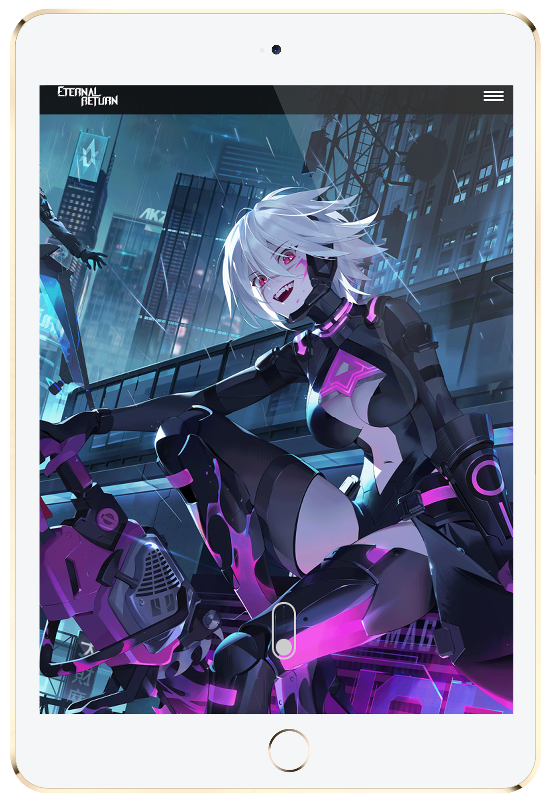
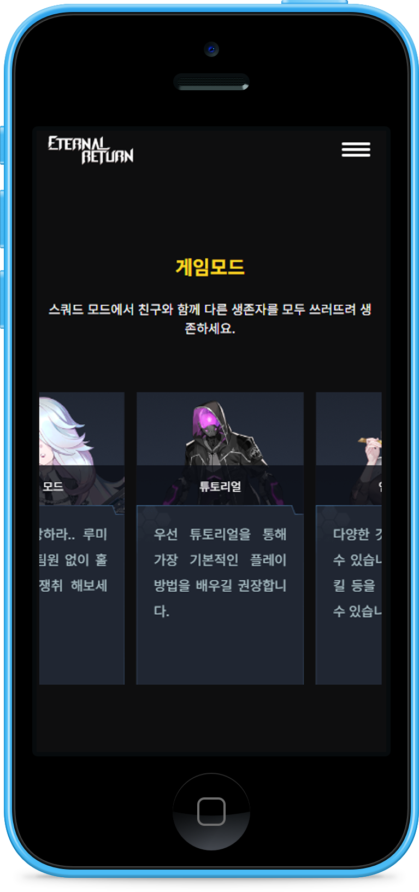
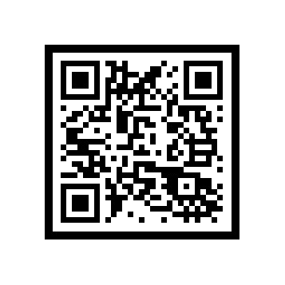
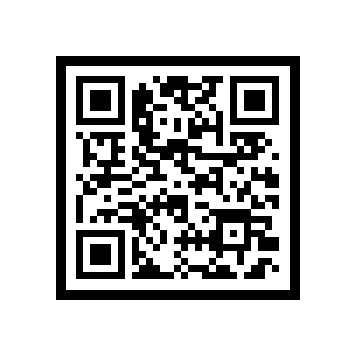

황유림 프로필
목요일 이미지 추가 예정
PROFILE
HWANG YURIM
- INFO
- 황유림 / 1999.11.08
- CONTACT
- 010-5811-2363 / yurim2800@gmail.com
- SKILL
- HTML5, CSS3, JavaScript, jQuery, Adobe After Effects, Premiere Pro, Photoshop, illustrator, Figma

 



반응형 웹사이트
- Eternal Return 웹사이트
- Visit Site
- 게임 '이터널리턴'을 주제로한 반응형 웹사이트입니다. 다양한 미디어 컨텐츠를 활용하고 미디어 쿼리를 이용하여 기기별 해상도에 최적화된 UI로 구성하여 사용자가 폭 넓게 이용할 수 있도록 반응형 웹을 구축했습니다.
- COLOR
- 제작기간
- 약 2주
- 사용 폰트
- Noto Sans KR
- 제작 인원
- 1인 (기여도100%)
- 제작스킬
- - HTML5, CSS3, JavaScript, jQuery
- - Adobe Photoshop, Adobe Premiere Pro, Figma
- - 대표 기기별 테스트 완료



기업형 PC 웹사이트
- 서대문 자연사 박물관 홈페이지(pc)
- Visit Site
- 최신 트렌드에 맞지 않고 한눈에 보기 어려운 레이아웃을 가진 기존의 사이트를 가독성이 좋고 폰트 배색의 부조화가 없는 디자인으로 구현 했습니다. 또한 이미지로 표현 되어있던 텍스트와 이미지 alt누락 등의 문제점을 웹표준과 접근성을 준수한 방식으로 개선하였습니다.
- COLOR
- 제작기간
- 약 1개월
- 사용 폰트
- Roboto, Noto Sans KR
- 제작 인원
- 1인 (기여도100%)
- 제작스킬
- - HTML5, CSS3, JavaScript, jQuery
- - Adobe Photoshop, Figma
- - W3C 웹표준 마크업 검사, 웹접근성검사(K-WAH), 크로스브라우징 완료


기업형 MOBILE 웹사이트
- 서대문 자연사 박물관 홈페이지(MOBILE)
- Visit Site
- PC용으로 구현된 서대문 자연사 박물관 홈페이지를 모바일 기기에 적합한 UI를 적용하여 새롭게 구현한 모바일용 웹사이트입니다. 마우스가 아닌 터치 드래그 이벤트를 중점적으로 구현했으며, PC버전과는 다르게 사용자 경험을 고려하여 간략화된 컨텐츠와 메뉴로 구성하였습니다.
- COLOR
- 제작기간
- 약 1주
- 사용 폰트
- Roboto, Noto Sans KR
- 제작 인원
- 1인 (기여도100%)
- 제작스킬
- - HTML5, CSS3, JavaScript, jQuery
- - Adobe Photoshop, Figma
- - W3C 웹표준 마크업 검사, 웹접근성검사(K-WAH), 크로스브라우징 완료


MULTIMEDIA
- 키네틱 및 영상편집(MULTIMEDIA)
- Visit Site
- 멀티미디어 디자인의 기초 역량을 익히기 위해 각종 동영상 편집과 키네틱 타이포그래피 사진 편집, 일러스트레이트 등을 어도비 툴들을 최대한 활용하며 작업했습니다.
- 제작스킬
- - After Effects, Premiere Pro, Photoshop, Illustrator
- 시장조사 및 기획
- 시장 조사 및 리브랜딩 기획서